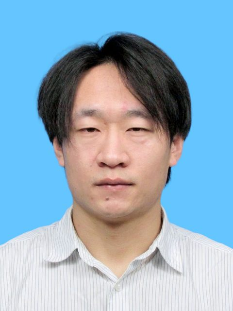

Principal Investigator
课题组长

Yao GUANG
光 耀
Welcome to the Guang Lab at the Eastern Institute of Technology. The next leap in artificial intelligence and low-power technologies relies on mastering the fundamental degrees of freedom of electrons. Our group operates at the exciting frontiers of condensed matter physics and materials science, with a passionate focus on topological magnetism and advanced spintronic devices. By engineering room-temperature topological spin textures—such as skyrmions and antiskyrmions—we seek to drive magnetic materials into entirely new functional states. Exploiting their non-linear dynamics and ultra-low energy consumption, we aim to translate the exotic physics of 2D magnets and spin-orbit torques into revolutionary neuromorphic computing architectures. Ultimately, we are building the hardware foundation required to deploy brain-inspired intelligence and energy-efficient edge computing applications in future tech. We invite passionate researchers and students to join our quest in exploring these emergent topological states and shaping the future of information technology.
Email: yaoguang(at)eitech.edu.cn
欢迎访问宁波东方理工大学光耀课题组。 人工智能与低功耗技术的下一次飞跃，有赖于对电子基本自由度的精准掌控。我们团队深耕于凝聚态物理与材料科学的前沿交叉领域，倾注热情聚焦于拓扑磁学与先进自旋电子器件。 通过对室温拓扑自旋结构（如斯格明子和反斯格明子）的工程化设计与调控，我们旨在驱动磁性材料进入全新的功能态。利用其非线性动力学特性与超低能耗优势，我们的目标是将二维磁体与自旋轨道矩的前沿物理机制，转化为革命性的类脑计算架构。最终，我们将为在未来科技中部署类脑智能与高能效的边缘计算应用，构筑坚实的底层硬件基础。 我们诚邀充满热情的科研人员与青年学子加入我们，共同探索这些前沿的衍生拓扑态，塑造信息技术的未来。
邮箱: yaoguang(at)eitech.edu.cn
Team Members
团队成员

Pengfei LUO
罗鹏飞
Research:
Topological Magnetic Materials
研究方向:
拓扑磁性材料